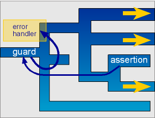

| 错误处理 |
 |
 |
 |
C++ 的异常处理机制与框架中的错误处理是天作之合. 想象一个完整的解析器如同一座迷宫. 在每个岔路口, 输入决定我们将转向何处. 若给定错误的输入, 我们可能走进死胡同. 一旦走进死胡同, 从来路回溯将浪费时间. 不如代之以在战略要点布设守卫. 超过某个界限之后, 我们在任何人都不允许到达的地方放置解析器断言.
这些断言就像弹簧, 把我们弹回到守卫处. 若给定特定输入模式后我们真的撞上了砖墙, 一切会迅速解卷(unwind), 我们被径直抛回守卫处. 若使用得当, 这可以是非常有效的优化. 回到守卫处后, 我们便有机会在可能的情况下纠正局面. 下图描绘了这一场景.
 |
parser_error 类是 Spirit 使用的通用解析器异常类. 它是所有解析器异常的基类.
template <typename ErrorDescrT, typename IteratorT = char const*>
class parser_error
{
public:
parser_error(IteratorT where, ErrorDescrT descriptor);
IteratorT where;
ErrorDescrT descriptor;
};
该异常在其 where 成员变量中保存遇到错误时的迭代器位置. 除迭代器外, parser_error 还在其 descriptor 成员变量中保存有关错误的信息(错误描述符).
语义动作可以在必要时随意抛出解析器异常. 可以调用一个实用函数 throw_. 该函数在给定迭代器和错误描述符的情况下创建并抛出一个 parser_error:
template <typename ErrorDescrT, typename IteratorT>
void throw_(IteratorT where, ErrorDescrT descriptor);
断言可以放在除了期望解析成功之外别无选择的地方. 若解析失败, 则抛出特定类型的异常.
在声明文法之前, 我们先声明一些断言对象. assertion 是一个模板类, 以断言失败时将抛出的错误类型为参数. 以下断言由用户定义的 Error 枚举参数化.
enum Errors
{
program_expected,
begin_expected,
end_expected
};
assertion<Errors> expect_program(program_expected);
assertion<Errors> expect_begin(begin_expected);
assertion<Errors> expect_end(end_expected);
上面的示例使用枚举来保存有关错误的信息, 我们也可以自由使用其他类型, 如整数和字符串. 例如, assertion<string> 接受一个字符串作为其 info. 不过还是建议使用轻量级对象, 毕竟错误描述符通常是静态的. 枚举便于错误处理器检测并轻松捕获, 因为 C++ 将枚举视为独特类型.
| 实际上, 表达式 expect_end(str_p("end"))会创建一个 assertive_parser 对象. assertive_parser 是一种以抛出异常来响应解析失败的解析器. assertive_parser 抛出 parser_error 异常, 而不是返回不成功的匹配, 以此表明解析器未能匹配输入. 在解析期间, 解析器会获得一个 IteratorT 类型的迭代器. 它与断言的错误描述符类型 ErrorDescrT(本例中为枚举 Errors)组合在一起. 两者被用于创建一个 parser_error<Errors, IteratorT>, 然后将其抛出以发出异常信号. |
预先声明的 expect_end 断言对象现在可以在文法中用作解析器的包装. 例如:
expect_end(str_p("end"))
若未能从输入中看到 "end", 这将抛出异常.
guard 用于捕获特定类型的 parser_error. guard 通常像 assertion 一样预先声明. 扩展我们前面的例子:
guard<Errors> my_guard;
本例中的 Errors 是我们想要检测的错误描述符类型, 即与上文相同的枚举. my_guard 现在可以在文法声明中使用:
my_guard(p)[error_handler]
其中 p 是一个求值为解析器的表达式. 在 p 内部的某处, 某个解析器可能抛出解析器异常. error_handler 是错误处理器, 它可以是与以下接口兼容的函数或函数对象:
error_status<T>
f(ScannerT const& scan, ErrorT error);
其中 scan 指向解析之前的扫描器状态, error 是发生的错误. 允许处理器自行酌情移动扫描器位置, 可能是为了尝试执行错误纠正. 处理器随后必须返回一个 error_status<T> 对象.
| 表达式 my_guard(expr, error_handler)会创建一个 fallback_parser 对象. fallback_parser 处理特定类型的 parser_error 异常. 由于 my_guard 被声明为 guard<Errors>, fallback_parser 会捕获 Errors 特定的解析器错误: parser_error<Errors, IteratorT>. 该类会建立一个 try 块. 当捕获到异常时, catch 块随后调用 error_handler. |
template <typename T = nil_t>
struct error_status
{
enum result_t { fail, retry, accept, rethrow };
error_status(
result_t result = fail,
int length = -1,
T const& value = T());
result_t result;
int length;
T value;
};
其中 T 是与 fallback_parser 主体的匹配属性兼容的属性类型(默认为 nil_t). error_status 类报告错误处理器的结果. 该结果可以是以下之一:
| error_status 结果 | |||||||
| fail | 退出并失败. 返回一个 no_match | retry | 尝试错误恢复, 可能移动扫描器 | accept | 强制成功, 返回匹配长度, 相应地移动扫描器并返回一个属性值 | rethrow | 重新抛出该错误 |
 可编译的示例见 error_handling.cpp. 它是 Spirit 发行包的一部分.
可编译的示例见 error_handling.cpp. 它是 Spirit 发行包的一部分.
|
|
|
Copyright © 1998-2003 Joel de Guzman
使用、修改与分发受 Boost 软件许可 1.0 版(Boost Software License, Version 1.0)约束. (随附文件 LICENSE_1_0.txt 或复制于 http://www.boost.org/LICENSE_1_0.txt)